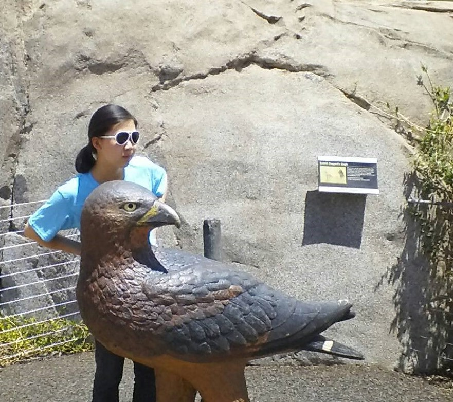

"When nothing goes right... go left"
Hi, I'm Yannan and I like trains. I hope you enjoy your time on this remarkably enlightening page about my rudimentary accomplishments.
Education: |
- UC Berkeley, Electrical Engineering and Computer Science major (2016-2020)
- Los Gatos High School (2012-2016)
|
Research Experience: |
- Stanford Institutes of Medicine Research Program - Bioinformatics Institute (2015)
- ASR research on solar cells and fluorescent dyes (2013-2014)
- UCSD COSMOS, EE and CS Cluster (2014)
|
Technical Experience: |
- Java
- R
- Python
- C
- Basic HTML
- Arduino Fundamentals
|
Honors and Awards: |
- California FBLA State Leadership Conference, Personal Finance: 5th Place, Nationals Qualifier (2016)
- National Merit Scholarship Finalist (2016)
- California FBLA State Leadership Conference, Business Procedures: 6th Place (2015)
- Enterprise Leadership Conference, 2nd place business plan presentation (2015)
- AATG German Test Level 4 Gold Award, 96 Percentile (2015)
- USA Biology Olympiad Semifinalist (2014)
- SAMPE Honorable Mention at Synopsys Science Fair (2014)
- National AP Scholar (2015)
|
Languages: |
- Bilingual proficiency: English, Chinese
- Limited working proficiency: German, Spanish
|
Activities/Interests: |
- Future Business Leaders of America, President (2013-2016)
- A Garden for Ghana, President (2013-2016)
- History Bowl, President (2014-2016)
- National Spanish Honors Society, Treasurer (2014-2016)
|
Volunteer Experience: |
- FHL Chinese School Summer Camp TA (2014-2015)
- Santa Clara Valley Water Youth Commission (2013-2014)
- LGS Recreation Summer School TA (2012-2013)
- Enlighten Chinese Summer School TA (2013)
- Music Service performances at Senior Centers (2012-2015)
|
Misc: |
- Eats everything
- Can sing most of Let it Go in French
- Can project without a microphone
|